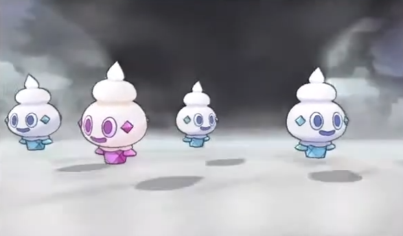

Voici les prérequis pour effectuer la technique des Hordes:
Objets:
-Munissez-vous du Charme Chroma, uniquement disponible à partir de Pokemon Noir et Blanc 2,
au près du professeur de la region après avoir complété le pokédex Nationnale pour pokemon Noir et blanc 2, X et Y et Rubis Omega et Saphire Alpha.
Pour Soleil et Lune et Ultra-Soleil et Ultra-lune, rendez-vous à Ho'ohale dans les locaux de Game Freak et parlez à Shigeki Morimoto de Game Freak une fois le pokédex de la région terminé. Pour Let's Go, Pikachu et Let's Go, Évoli, rendez-vous à Résidence Céladon, parlez à un développeur de Game Freak en ayant complété le pokédex de la région.Pour Epée et Bouclier, rendez-vous à l'Hôtel Ionia à Ludester et parlez au PNJ en tenue de docteur dans l'une des chambre en ayant complété le pokédex.
Ce charme augmente considérablement la chance de trouver un pokemon shiny.

Pokémon:
Avoir un pokemon avec l'attaque "Doux Parfum", qui permet d'apparition des pokemons en hordes